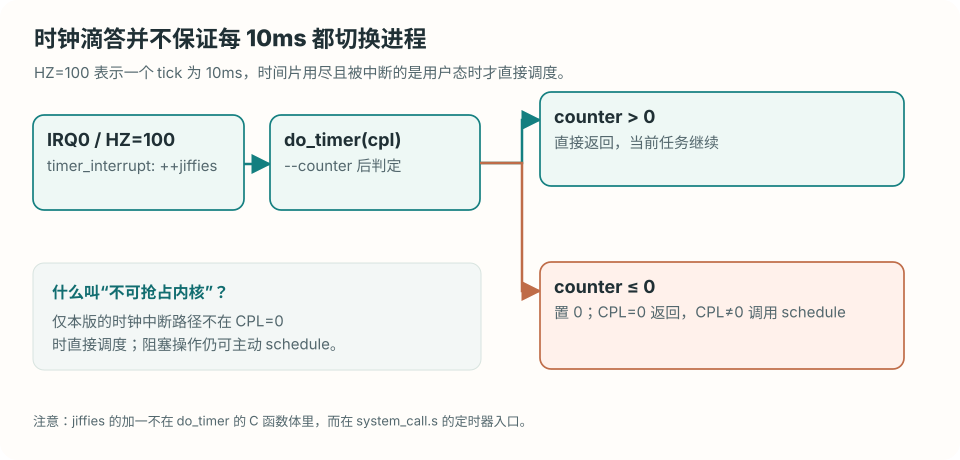
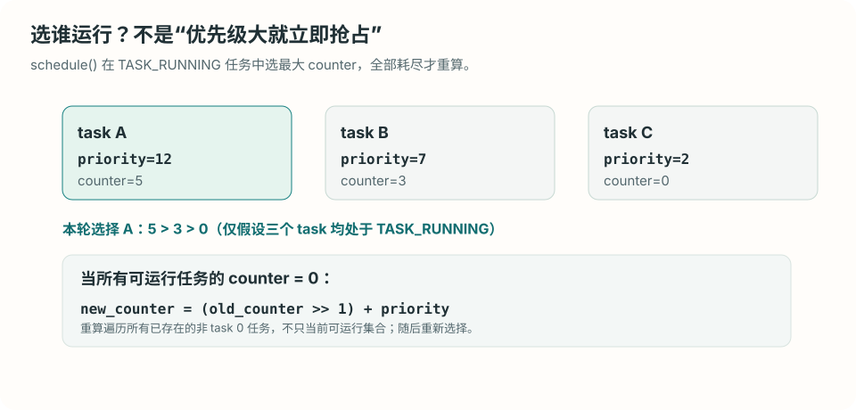

调度器内部：counter、时钟滴答与硬件任务切换
在 Linux 0.11 中，schedule 从 TASK_RUNNING 中扫描 counter；耗尽后按旧值右移一位加 priority 重算，并通过 TSS ljmp 切换任务。
counter · HZ=100 · TSS为什么时间片结束时不一定立刻换进程？
调度器是操作系统决定下一段 CPU 时间给谁的机制。但不能把 schedule() 理解成每个时钟滴答必然运行一次，更不能说每次运行就必然切到新进程。Linux 0.11 用 PIT IRQ0 定期更新计数器，却允许内核态继续执行至合适的调度点。
这章将分开回答三个问题：谁让当前任务有机会被换走？候选任务如何竞争？切换上下文时 CPU 保存什么？ 先沿时钟中断，再从 C 调度算法走到 TSS 宏。

task_struct 的关键调度字段
include/linux/sched.h 定义了 NR_TASKS=64、HZ=100 与若干任务状态。task[] 是指向任务结构的指针数组，其中 task 0 为特殊 idle 任务。state 控制任务能否进入候选集，counter 表示本轮可消耗的 tick 数，priority 用来为下一轮 counter 注入基准份额。
| 字段/常量 | v0.11 语义 | 常见误区 |
|---|---|---|
| state = 0 | TASK_RUNNING：可以竞争 CPU | 不是“正在 CPU 上执行”的唯一状态 |
| state = 1 | TASK_INTERRUPTIBLE：可因信号等恢复 | 并非任何睡眠都能被任意信号打断 |
| state = 2 | TASK_UNINTERRUPTIBLE | 不会被本章的信号检查简单唤醒 |
| counter | 当前可消耗的时间份额 | 不是系统运行总时间 |
| priority | 重算时增加的份额基准 | 不是 CFS/EEVDF 的现代权重规则 |
jiffies 在哪里增加
版本源码中的 jiffies 初始为 0，HZ=100 表示目标 PIT tick 周期约为 10ms。_timer_interrupt 在汇编里执行 incl _jiffies，确认 PIC，再计算从 CS 中得到的 CPL 并调用 do_timer(cpl)。把 jiffies++ 随意搬到 C 函数体里会误导读者分析汇编断点。
current.counter -= 1
if current.counter > 0: return
current.counter = 0
if cpl == 0: return # 被 IRQ 中断时在内核态
schedule() # 从用户态耗尽 counter实际 do_timer 还处理用户/系统 CPU 时间记账、beep 和定时器链，以及软驱计时器。这里挑出时间片分支是为了建立因果顺序，并不把它误称为全部函数体。
逐行把 schedule() 变成可观察的算法
进入 schedule() 后，代码先检查报警计时与可递送信号，让符合条件的 TASK_INTERRUPTIBLE 任务重新变成 TASK_RUNNING。然后从任务数组较高位置向下扫描（避开任务 0），找到 state == TASK_RUNNING 且 counter 最大的任务槽。若所有候选的 counter 都为零，就重算已存在任务的 counter，并再次扫描。
wake_interruptible_tasks_with_pending_unblocked_signals()
repeat:
next = 0; best = -1
for slot in 63 .. 1:
if task[slot] is RUNNING and task[slot].counter > best:
best = task[slot].counter
next = slot
if best != 0: break
for each existing task in slots 63 .. 1:
task.counter = (task.counter >> 1) + task.priority
switch_to(next)注意两个边界：next=0 是没有可运行的非 0 任务时的兜底；真正遍历哪些任务以及“当 c=-1、所有不可运行”时会不会直接跳出，需结合 if (c) break 逻辑理解：当没有候选时，c=-1，也会跳出并选择 task 0。这也是为何不可以机械地写成“所有任务 counter 都为 0 时总是重算”。
手算一次 counter 的选择与重算
假定三个任务都为 TASK_RUNNING：A 的 priority=12,counter=5；B 为 7,3；C 为 2,0。这次扫描选择 A，因为比较依据是 counter，A 的 5 最大。若继续运行至三者 counter 全为 0，重算后分别得到 12、7、2。

重算表达式 (old_counter >> 1) + priority 是整数右移，相当于对非负 counter 向下取整除以 2。它不是每次 tick 都执行，也不是对所有任务无条件同步重置为 priority。旧计数的一半会被保留，因此阻塞期间未用完的份额可以影响下一轮。
如果 A 的 counter 是 0、B 是 1、C 不可运行，谁被选中？（点击展开解析）
B。只有 TASK_RUNNING 的任务参与扫描；A 为零、B 为 1，则 B 的 counter 最大。C 即使 counter 很大，只要不可运行就不是当前候选。
从 schedule() 到 ljmp：两种上下文机制
当 schedule() 决定 next 后，调用的 switch_to(next) 并非 kernel/system_call.s 中的普通汇编函数，而是 sched.h 里的内联宏。它与 fork.c 设置的任务 TSS 描述符形成配套：先确认目标不同，更新 current，再用 ljmp 触发 386 硬件任务切换。
TSS 包含新任务 EIP、ESP、EFLAGS、CR3、段寄存器和 LDT 选择子等。硬件保存/恢复的上下文切换与 int 0x80 入内核时的同一任务特权级栈切换不是一回事。后者可以返回原用户进程，并不意味着发生了 schedule() 选择另一任务。
grep -n 'incl _jiffies\|_timer_interrupt' kernel/system_call.s
grep -n 'void do_timer\|void schedule\|switch_to(next)' kernel/sched.c
grep -n '#define switch_to\|#define HZ\|#define NR_TASKS' include/linux/sched.h预期：看到汇编层 jiffies 增加，C 层 do_timer/schedule，头文件中 TSS 任务切换宏三个不同位置。后续阅读 fork 时，进一步研究新任务 TSS 和 LDT 如何被初始化。
这套算法的边界和历史位置
本版调度算法是固定数组扫描，任务槽上限为 64；它没有现代多核负载均衡、实时调度策略与 CFS/EEVDF 的完整机制。“优先级反转”是一般系统设计需要考虑的问题，但不能把一个未验证的事故故事当成 Linux 0.11 源码中实际发生过的 bug。研究调度公平性与响应性也不能仅从这个三任务教学例子推断基准指标。
可重现的正确结论是：扫描所有可运行任务选最大 counter；必要时保留旧 counter 的一半并加 priority；用户态时钟耗尽可引发调度；最终通过硬件 TSS 交换执行上下文。除此以外的性能比较应使用实际实验数据，并声明内核版本、设备、负载与模拟器设置。
逐文件交叉验证
- kernel/sched.c：
schedule、do_timer、sys_pause、sched_init。 - kernel/system_call.s：时钟中断的
incl _jiffies及 CPL 传参。 - include/linux/sched.h：
NR_TASKS=64、HZ=100、任务状态与switch_to。 - kernel/fork.c：新任务初始化、TSS 和 LDT。
下一章沿 fork → execve → exit → wait 连续观察任务的创建与消亡，补齐调度器背后的生命周期。